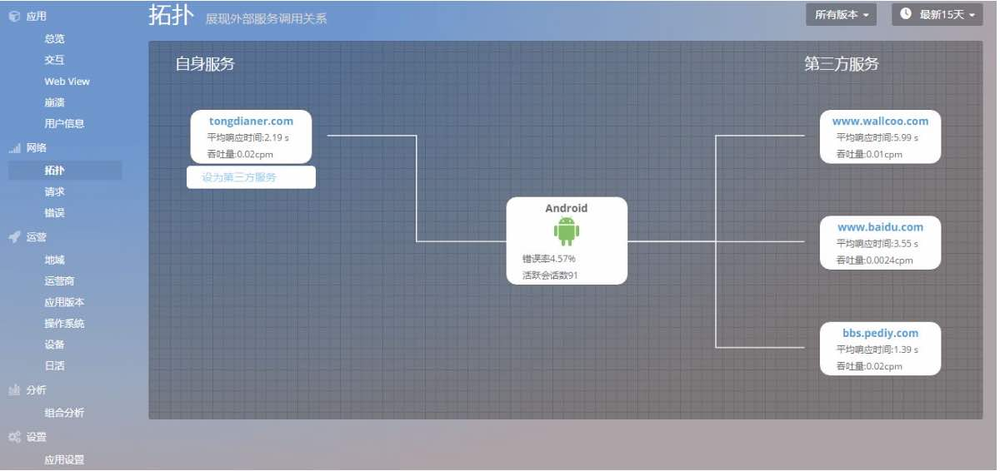
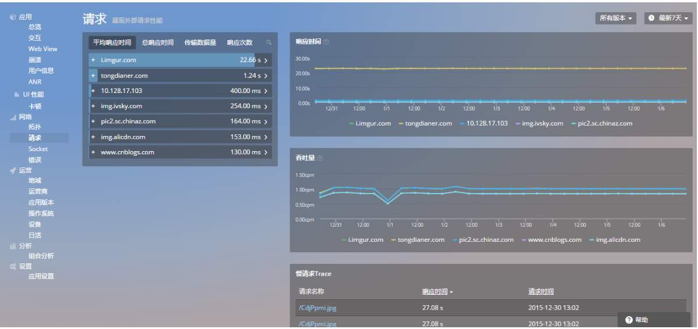
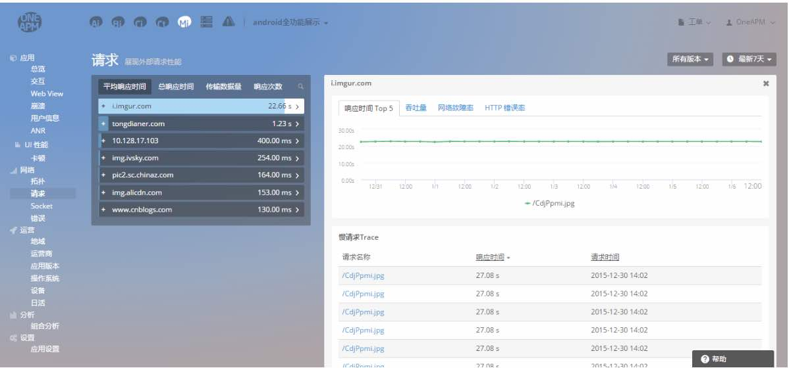
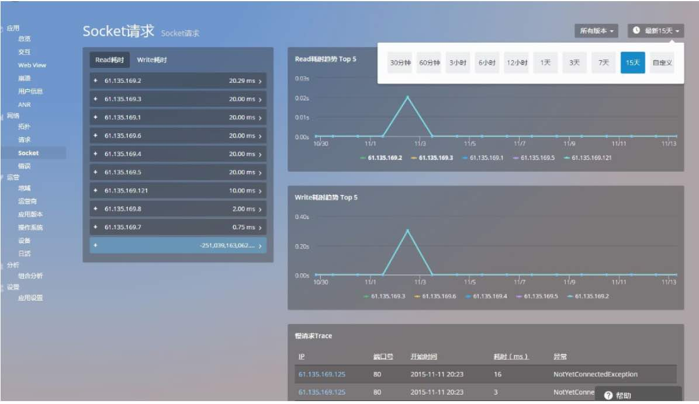
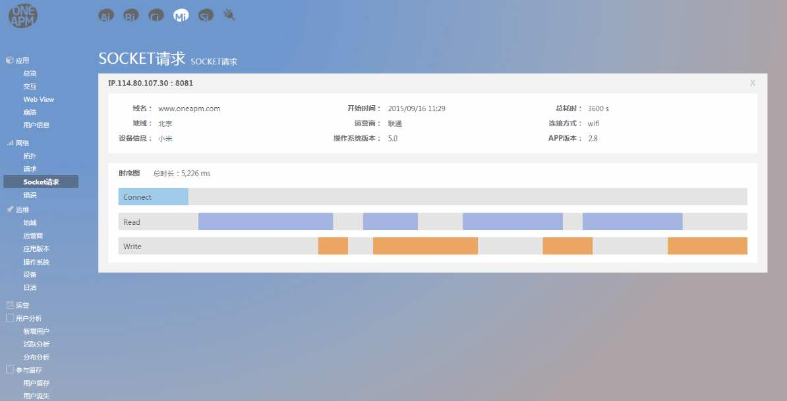
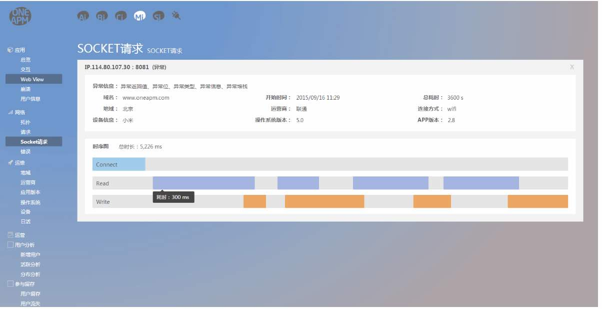
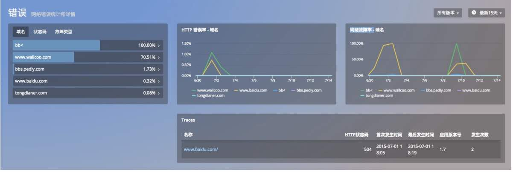
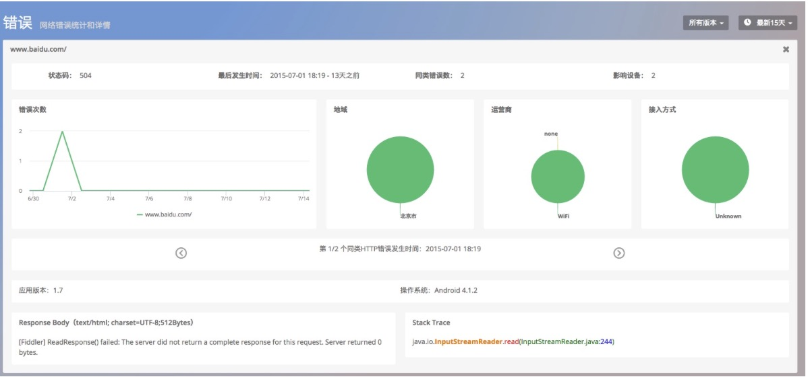

网络
针对移动 App 的网络监控，Mobile Insight 主要有以下功能：
- 拓扑
- 请求
- Socket
- 错误
1. 拓扑
「拓扑图」展示该应用的网络请求状况。显示App正在使用的服务，以及对应的平均响应时间、吞吐量等。默认情况下，左侧为自身服务、右侧为第三方服务。若您需要自主设定服务所属类别，将鼠标悬停在其图标上即可进行设置。 点击服务名称，可跳转到网络请求详情页面。

2. 请求
「请求」功能监测分析网络请求的性能数据，帮助运营和开发人员提升用户体验。该界面包含以下内容：
- 网络请求列表：按照平均响应时间、总响应时间、传输数据量、响应次数进行列表。
- 响应时间：展示网络请求平均响应时间TOP5的时间曲线；该时间是指从发送 HTTP 请求开始，到收到所有响应内容的时间。
- 吞吐量：展示吞吐量 TOP 5 的时间曲线；吞吐量是指平均每分钟的 HTTP 请求数量。

此外，您可以利用请求列表中的搜索功能，快速检索您关心的网络请求。
点击「请求」列表的URL，可查看对应的请求详细信息：响应时间、吞吐量、网络故障率、HTTP 错误率。

3. Socket
「Socket请求」可以监控socket在发送过程中的各种问题。在java中socket有两个类可以实现socket的通讯功能,其一是socket,另一个就是socketChannel,目前可以支持java中两种socket的监控。
具体操作：把socket代码进行一些修改就可以记录数据，这样就可以直观了解socket在传输过程中的问题。
Socket的监控
首先将socket功能提供一个包装类,然后可以实现数据收集。
具体实现如下：
Socket socket = new Socket();
SocketInstrumentation socketInstrumentation = new SocketInstrumentation();
socketInstrumentation.connect(new InetSocketAddress("127.0.0.1",12345));
//读取服务器端数据
DataInputStream input = new DataInputStream(socketInstrumentation.getInputStream());
//向服务器端发送数据
DataOutputStream out = new DataOutputStream(socketInstrumentation.getOutputStream());
...
socketInstrumentation.close();
SocketChannel
具体实现如下：
SocketChannel socket = SocketChannel.open();
SocketChannelInstrumentation socketChannelInstrumentation1 =
new SocketChannelInstrumentation(socket);
socketChannelInstrumentation1.connect(
new InetSocketAddress("127.0.0.1", 12345));
socketChannelInstrumentation1.read(readBuffer);
socketChannelInstrumentation1.write(pendingData.get(0));
...
socketChannelInstrumentation1.finishConnect();
这样就可以进行操作了，socket监控程序能够正确的运行并收集您程序中存在的问题，可以直观展示：Read耗时趋势Top5，Write耗时趋势Top5，右上方鼠标悬停可以添加至仪表盘，在耗时曲线上鼠标悬停可以看到某一天的耗时时间。

点击列表中任意无异常数据，查看详情：

点击异常信息，查看详情：

4. 错误
「错误」功能展示的是在App上发生的HTTP错误和网络故障，该界面包含以下内容：
- 错误统计列表：可以按照域名、状态码、故障类型三种方式对错误进行筛选排序。
- HTTP 错误率 ：HTTP 错误率最高的五个域名。
- 网络故障率 ：网络故障率最高的五个域名。
- 错误详情：通过 URL名称和HTTP状态码识别为一个错误，并展示错误首次发生时间、最后发生时间、应用版本号以及发生次数，点击错误查看详情。

错误详情
详情页面展示了该网络错误次数的时间曲线、错误影响区域的占比、错误影响运营商的占比和错误影响接入方式的占比。
- 错误次数的时间曲线能告诉用户网络错误的趋势，在哪个时段最容易出现错误。
- 地域、运营商和接入方式均是与网络密切相关的指标。
- 地域占比能告诉用户应该特别注意哪个地区的网络性能。
- 运营商占比反映了哪家运营商的服务对自己的应用最友好。
如图所示，这是用户连接 WIFI 使用 App 时，发生了 HTTP错误。此外，HTTP 错误归类滚动追踪轴，可以查看单次HTTP错误的详情。当App上线后，短时间内的HTTP错误可能多达上百条，不易查看。将同类信息合并，可以快速发现关键问题。而需要查看细节时，也可以滚动追踪轴，查看每条记录。

关键词：拓扑 请求 Socket 错误